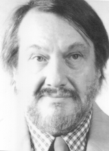

Please note: the AAS Obituaries are temporarily being hosted on this website while their full content is being ingested into the PubPub publishing platform newly adopted by the Bulletin of the American Astronomical Society. When the migration is complete, your existing links will take you to the final, migrated content. Contact peter.williams@aas.org with any questions.
Heinrich Karl Eichhorn (1927-1999)
A primary founder of modem astrometry and a man whose essential nature was innovation was lost with the passing of Heinrich K. Eichhorn—Heinz to his friends—on April 24, 1999. Heinz believed in a broad definition of astrometry, so as to include location and motion measured by any means, including radial velocities and interferometry; and his rigorous thinking was legendary among active astrometrists and students alike. Openness to the ideas of others and enthusiastic encouragement were major components of his image, as illustrated by a young astronomer's story: "I had found a problem with one part of a scheme by Heinz and imagined that he would either brush it aside or protest that it was really OK. What I did not expect was what actually happened. He responded with, 'Hey, you are right. You should publish that.' , , Such intellectual generosity contrasted with the reception of his own original ideas during post-doctoral days, and his stories of crusty old professors insisting that he do things by the book were jovially told.
Heinrich Eichhorn was born in Vienna, Austria on November 30, 1927. His doctorate was earned summa cum laude from the University of Vienna in 1949 for work with Prof. Adelbert Prey on "Funktionaldeterminante und Ausnahmefaelle bei der Bahnbestimmung in der Ellipse"(roughly, "functional determinants and exceptional cases with observational determination of elliptical orbits"). His early professional life was adversely affected by post-war scarcity of positions in Europe so, after post-doctoral appointments in Vienna and Glasgow, he move to America in 1954. Following a postdoc at the University of Virginia (1954-1956), he accepted an assistant professorship at Georgetown College (DC, 1956-1959), and then an associate professorship at Wesleyan University (CT, 1959-1964). Then a challenge opened up: to start an astronomy department at the almost-new University of South Florida (USF). The unusual opportunity arose because President John Allen of USF was an astronomer and felt that any good university should have a major astronomical commitment. Within a few years, Eichhorn had assembled five other astronomers with diverse interests, making the venture an unqualified success. In 1979, well after Allen's retirement, the State of Florida decided to merge its two astronomy centers, whereupon Heinz and his faculty moved, to the University of Florida, and he became chair of another new astronomy department.
Eichhorn was not exclusively an astrometric theoretician and did more than his share of work under the stars. During his stay in Virginia, he was one of two main observers and one of four main plate measurers. Over those two years, he exposed about 1000 photographic plates, including ones for parallaxes, proper motions, and visual binary orbits. His analysis of field distortions of the venerable Leander McCormick refractor greatly reduced its positional errors. He also set up positional measuring programs for students, with most supervision of the measurement by his first wife, Edelgard.
Eichhorn's theoretical work included modeling of systematic effects in position measurement, in which thought experiments and numerical experiments tested whether idealized error sources were indeed significant. No one else seemed to go so deeply into interactions of temperature, magnitude, color, and telescope aberrations, and even possible variations of aberrations over a night. Often he would bring up these subjects to get others thinking. He had a passion for ridding catalogues of systematic errors and was very vocal in conference discussions, especially in trying to understand all errors that enter into position measurement. His penchant for using humor to make a point was particularly in evidence at conferences, such as when he argued that astrometry is not necessarily outmoded just because it is old and, by analogy, that "there are absolutely no serious suggestions for a reform of the way that humanity reproduces itself."
The Plate Overlap method, which requires the standard coordinates of stars that appear on overlapping plates to be the same, is particularly well known and associated with his name, but it is only one of Eichhorn's innovations. Others include acceleration parallaxes, the concept of efficiency in adjustment theory, and statistical constraints on solutions. Some of the many advances in space astrometry made possible by his ideas are outlined in Jefferys (1998, see following note). Heinz's publications tended to have only one or a few authors, as he was not interested in large scale team research (which he described with the facetious concept of "precision per collaborator"). Perhaps most characteristic of his work is that he thought far beyond immediate needs, continually reminding colleagues that definitions of coordinate systems should continue to apply and be useful, even after observing accuracy improves by orders of magnitude.
Eichhorn wrote Astronomy of Star Positions and was editor or co-editor of at least four other books on astrometry. A book long in the making, Kinematic Astronomy, was nearly complete at his death and arrangements to have it published are underway. Many technical reports (most single-author) resulted from his extensive consulting on astrometric topics. Heinz organized several international astrometric conferences, most notably IAU Symposium 109, in Gainesville, Florida, for which his second wife, Eva, translated the Russian contributions.
Eichhorn's long list of honors includes Corresponding Membership in the Austrian Academy of Sciences and honorary professorships at the Universities of Vienna and Graz. His students included W. Clary, C. Cole, W. Cooke, F. Fallon, G. Gatewood, W. Jefferys, J. Morrison, W. Owen, R. Nugent, J. Russell, R. Smart, M. Standish, and Y. Xu. The University of Vienna held a conference in celebration of his career in May 1998. Most of the contributions opened with laudatory comments about his influence on accomplishments and careers. Minor planet 4297 Eichhorn is named for him, and he was vice-president and president of IAU Commission 24 (1976-82), a committee member, vice chair, and chair of the AAS Division of Dynamical Astronomy, and a member of Sigma Xi.
Heinz loved to travel by just about any means, and once drove from Tampa to New York to pick up a friend at JFK airport. That trait, combined with his varied interests in science and philosophy, made him a natural as a Shapley Visiting Lecturer, and he was a regular participant in that highly successful AAS program. His gift for languages allowed conversation with the locals in most of the countries of his extensive travels. Although only occasionally among French speakers, he could lecture in French and liked to do so. Memorable parties at the Eichhorn home combined entertainment with an intellectual atmosphere, both in Tampa with Edelgard and in Gainesville with Eva. Anything that came up was a legitimate topic, with conversations typically centered around issues of genuine interest, whether historic, linguistic, artistic, or scientific.
Heinz courageously faced death with no loss of cheerfulness. Social events at the Eichhorn home continued until his final hospitalization, and he and his friends were pleased that he came home for the last week.
Photo courtesy the University of Florida
Obituary written by: R. E. Wilson (University of Florida, Gainesville and Institute of Astronomy, University of Cambridge), Haywood Smith, Jr. (University of Florida, Gainesville)
BAAS Citation: BAAS, 2000, 32, 1662
SAO/NASA ADS Bibcode: 2000BAAS...32.1662W